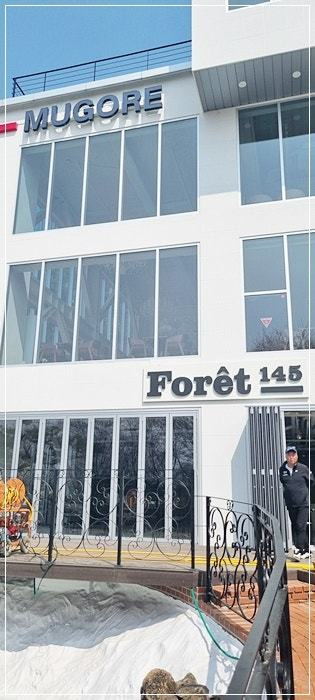

오픈쇼케이스
오픈쇼케이스 보증, 기간보다 먼저 읽어야 할 조건

오픈쇼케이스 보증을 볼 때는 무상 기간보다 콤프레셔와 에어커튼 송풍 부품이 보증 범위에 들어가는지, 수리를 제조사가 직접 하는지, 보증이 끝난 뒤에도 유상 수리가 되는지를 먼저 확인하셔야 합니다. 중고 제품이라면 보증을 누가 서는지부터 분명히 해 두세요.
안녕하세요. 마트와 카페에 오픈형 냉장 진열장을 제작·설치해 온 한성쇼케이스입니다.
오픈쇼케이스 견적서를 받으면 맨 아래 '보증 1년' 같은 한 줄이 적혀 있는 경우가 많습니다. 대부분 그 숫자만 보고 넘어가시는데, 막상 고장이 나면 "이 부품은 소모품이라 제외", "설치 환경 문제라 유상" 같은 말을 듣고 당황하시곤 합니다.
오픈쇼케이스는 문이 없어 에어커튼과 콤프레셔가 쉬지 않고 일하는 장비입니다. 그만큼 보증 조건을 미리 정확히 알아 두는 것이 중요합니다.
오늘은 보증서와 계약서에서 꼭 확인해야 할 항목을 하나씩 짚어 보겠습니다.
1. 보증 범위: 어떤 부품이 포함되는지
보증 기간이 같아도 범위는 업체마다 다릅니다. 오픈쇼케이스에서 고장이 나면 손실이 큰 부분은 콤프레셔, 냉각기, 에어커튼을 만드는 송풍 팬, 온도 컨트롤러입니다.
이 부품들이 보증 범위에 들어가는지 문서로 확인하세요.
조명이나 선반, 나이트커버처럼 소모품으로 분류되는 부분은 따로 정해 두는 경우가 많습니다. 어디까지가 소모품인지 미리 물어 두면 나중에 다툼이 줄어듭니다.
오픈쇼케이스는 나이트커버를 쓰는 매장이 많은데, 커버 롤이나 고정 장치가 고장 났을 때 어떻게 처리되는지도 함께 물어 두시면 좋습니다.
- 콤프레셔·송풍 팬 포함 여부를 확인하세요.
- 소모품으로 분류되는 부품 목록을 받아 두세요.
- 출장비가 무상에 포함되는지도 물어보세요.
2. 누가 수리하러 오는지
유통 업체에서 산 제품은 고장 접수를 하면 제조사로, 다시 지역 협력 기사로 넘어가는 경우가 있습니다.
이 과정이 길어지면 보증 기간 안이라도 수리까지 시간이 걸립니다.
자체 공장을 운영하는 제조사는 제품 구조와 부품을 직접 알고 있어 원인을 찾고 부품을 구하는 과정이 짧습니다.
우리 지역에 서비스 센터가 있는지, 접수부터 방문까지 보통 어떻게 진행되는지 계약 전에 들어 두세요.


3. 보증이 안 되는 경우도 미리 알아 두세요
오픈쇼케이스는 설치 위치에 따라 성능이 크게 달라집니다. 냉난방기 바람이 정면으로 닿거나 출입문 바로 앞에 놓이면 에어커튼이 흐트러져 냉기가 약해지는데, 이런 경우는 고장이 아니라 설치 환경 문제로 보는 업체가 많습니다.
기계실 통풍구를 박스로 막아 두거나, 오래 청소하지 않아 응축기에 먼지가 쌓여 생긴 고장도 보증에서 빠질 수 있습니다.
설치 때 기사님께 피해야 할 사용 습관을 꼭 물어보세요.
- 냉난방기 바람이 직접 닿지 않는 자리에 설치하세요.
- 기계실 앞을 짐으로 막지 마세요.
- 응축기 청소 주기를 기사님께 물어 두세요.
4. 중고 오픈쇼케이스의 보증
중고 제품은 개인 거래인지, 업체 판매인지에 따라 보증이 완전히 달라집니다. 개인 거래는 보통 보증이 없고, 업체 판매라도 판매처가 제작사가 아니면 수리를 어디서 받을지 애매해집니다.
중고를 고려하신다면 제조사와 모델명을 확인하고, 판매처가 직접 수리할 수 있는 곳인지를 꼭 물어보세요.
보증 기간이 짧더라도 그 뒤에 유상 수리를 받을 길이 있는지가 실제로는 더 중요합니다.
체크리스트
- 무상 보증 기간과 시작 시점
- 콤프레셔·송풍 팬 보증 포함 여부
- 소모품 목록과 출장비 조건
- 수리 주체와 지역 서비스 센터
- 보증 제외 사유(설치 환경·관리)
- 보증 후 유상 수리 가능 여부
현장에서 자주 보는 경우: 중고 오픈쇼케이스와 A/S를 함께 고민하실 때
창업 비용 부담 때문에 중고 오픈쇼케이스를 함께 알아보시는 사장님이 많습니다. 저희도 자체 제작 공장을 운영하면서 새 제품 맞춤 제작과 함께 중고 오픈쇼케이스를 다양하게 보유하고 있어, 상황에 맞는 제품을 추천해 드리고 있습니다.
어느 쪽을 고르시든 저희가 강조하는 것은 판매 이후입니다. 쇼케이스는 전자제품이라 A/S가 필요할 수밖에 없고, 직영 공장을 가지고 있기 때문에 제품 구조를 알고 빠르게 수리할 수 있습니다.
보증 기간 숫자만큼 그 뒤를 누가 책임지는지가 중요하다고 말씀드리는 이유입니다.





자주 묻는 질문
오픈쇼케이스 보증 기간은 언제부터 시작되나요?
업체마다 출고일 기준인지 설치일 기준인지 다릅니다. 계약서에 시작 시점이 적혀 있는지 확인하고, 설치 확인서를 받아 두시면 좋습니다.
에어커튼 바람이 약해졌는데 보증 대상인가요?
송풍 팬이나 부품 고장이라면 보증 범위에 들어가는 경우가 많습니다. 다만 냉난방기 바람이나 설치 위치 때문이라면 환경 문제로 볼 수 있어, 점검 후 원인에 따라 안내받으시게 됩니다.
보증 기간이 끝나면 수리를 받을 수 없나요?
보증이 끝나도 유상 수리는 가능합니다. 한성쇼케이스는 전국 240여 개 A/S 센터로 보증 이후에도 수리를 지원합니다.
매장 조건에 맞춰 만드는 한성쇼케이스
원하시는 제품 사진과 설치할 공간 사진만 보내 주셔도 매장에 맞는 구성을 추천해 드립니다.
- 전국 240여 개 A/S 전담 센터 운영
- 본사 대량 자재 매입으로 품질 대비 합리적인 가격
- 유럽제·삼성 냉각 콤프레셔 적용
- 국내 최초 쇼케이스 전문 디자이너 상주
매장 폭과 원하는 진열 구성을 알려 주세요. 실측과 견적을 안내해 드립니다.
031-986-2458